Replication (Chapter 5) gave us copies of the same data. When the data or the traffic is too big for one machine, copies are not enough: we must split the data into pieces called partitions and spread them across many machines. This chapter shows the two main ways to decide which record goes into which piece (by key range or by hash of the key), why some pieces still get overloaded (hot spots), and how secondary indexes complicate things. It then explains how to rebalance pieces when machines are added or removed, and how a request finds the right machine (request routing). Every widget on this page is live: press the buttons and watch the data move. Numbers marked "modelled" are made up to illustrate; numbers from the book are marked as such.
Kleppmann builds one chain of reasoning. Each link answers a problem created by the previous link. Read it top to bottom; each row is a plate (or a group of plates) further down.
The chapter opens with a 1962 quote from computing pioneer Grace Murray Hopper, ending with "We must state relationships, not procedures." It is a nod to thinking about how data is laid out, not only about the steps a program runs.
In Chapter 5 we looked at replication: keeping several copies of the same data on different machines (nodes). For a very large dataset, or a very high query throughput (queries per second), that is not enough. Every replica still holds everything. We also need to break the data up into partitions.
The same idea has many names. What this book calls a partition is called:
| Name | Used by |
|---|---|
| shard | MongoDB, Elasticsearch, SolrCloud |
| region | HBase |
| tablet | BigTable |
| vnode (virtual node) | Cassandra, Riak |
| vBucket | Couchbase |
"Partitioning" is the most established term, so the book sticks with it. When you read "sharding" anywhere else, it means the same thing.
Normally partitions are defined so that each piece of data (each record, row or document) belongs to exactly one partition. There are several ways to achieve that; they are the subject of this chapter. In effect, each partition is a small database of its own, although the database may support operations that touch several partitions at the same time.
Partitioning here means intentionally breaking a large database into smaller ones. It has nothing to do with network partitions (also called netsplits), which are a fault: the network between nodes breaks so some nodes can't talk to others. Network faults are covered in Chapter 8 (ch08).
Why partition? Scalability. Different partitions can be put on different nodes in a shared-nothing cluster (machines that share no disk or memory and talk only over the network; defined in the Part II introduction, see ch05). So:
History. Partitioned databases were pioneered in the 1980s by products such as Teradata and Tandem NonStop SQL [1], and more recently rediscovered by NoSQL databases and Hadoop-based data warehouses. Some systems are built for transactional workloads (OLTP, online transaction processing: many small reads/writes by users) and others for analytics (OLAP, online analytic processing: big scans for reports); see "Transaction Processing or Analytics?" in ch03 (printed p.87, pdf p109). That difference changes how a system is tuned, but the fundamentals of partitioning are the same for both.
Roadmap of the chapter: (1) different ways to partition a large dataset; (2) how indexing of data interacts with partitioning; (3) rebalancing, needed when you add or remove nodes; (4) how databases route requests to the right partition and execute queries.
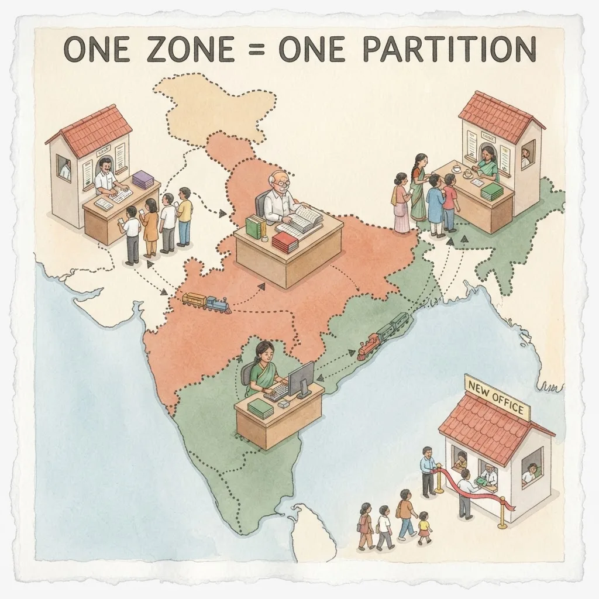
Indian Railways does not keep every passenger's booking in one office. Each zone (Central, Western, Southern…) keeps its own trains' bookings. Each booking belongs to exactly one zone (one partition). Each zone office works on its own, so adding a zone office adds capacity. Where it breaks: a railway zone is chosen by geography; a database must choose the piece by a rule on the record's key, and that rule is what this chapter is about.
One machine has a fixed amount of disk, RAM, CPU and network. Copying the data (replication) multiplies read capacity a bit but not storage: each copy needs the whole dataset. Splitting divides both storage and work. If queries touch only one piece, pieces never need to talk to each other, and capacity grows almost linearly with machines. The hard parts (the rest of the chapter) are choosing the split rule, keeping it fair, and finding the piece.
Dataset: 10 TB. Traffic: 60,000 small queries per second. One node can hold 2 TB and serve 10,000 queries per second.
| Data per node | Queries/s per node | Fits? | |
|---|---|---|---|
| 1 node (copies only, no split) | 10 TB | 60,000 | no: 5× too much data, 6× too much load |
| 3 replicas of the whole thing | 10 TB each | 20,000 (reads only) | no: every copy still needs 10 TB |
| 5 partitions on 5 nodes | 2 TB | 12,000 | data fits, load doesn't |
| 6 partitions on 6 nodes | ≈1.7 TB | 10,000 | yes |
Copies (replication) never shrink the data a node must hold. Splitting (partitioning) shrinks both the data and the load per node. Here the load, not the disk, decides you need at least 6 nodes.
Partitioning is usually combined with replication: copies of each partition are stored on several nodes. So even though each record belongs to exactly one partition, it may still be stored on several different nodes for fault tolerance (surviving a machine failure).
A node may store more than one partition. With the leader-follower replication model from Chapter 5, the combination looks like Figure 6-1: each partition's leader is on one node, and its followers are on other nodes. Each node may be the leader for some partitions and a follower for others.
Everything from Chapter 5 about replicating databases applies equally to replicating partitions. The choice of partitioning scheme is mostly independent of the choice of replication scheme, so to keep things simple the rest of the chapter ignores replication.
There are 4 nodes and 4 partitions, and each partition has 3 copies (1 leader + 2 followers), so each node holds 3 copies. Look for the word "Leader": Partition 1 leads on Node 1, Partition 3 on Node 2, Partition 2 on Node 3, Partition 4 on Node 4. So every node is leader for exactly one partition and follower for two. The grey arrows are replication streams, one per partition, going from that partition's leader to its followers. The stick figure at the bottom right writes to partition 4: the write goes to partition 4's leader on Node 4, which then streams it to the followers on Node 2 and Node 3.
A school has 4 subjects (partitions) and 4 teachers (nodes). For each subject one teacher is the main teacher who sets the marks (leader), and two others keep a photocopy of the mark register (followers). Every teacher is main teacher for one subject and keeps photocopies for two others. If a teacher is absent, the subject still has two registers elsewhere. Where it breaks: photocopies are instant; real followers receive changes over a network with some delay (replication lag, Ch.5).
A user writes to partition 4. Follow it step by step:
Each of the 4 partitions has 1 leader + 2 followers = 12 replicas spread over 4 nodes, so each node holds 3 replicas and is leader for exactly 1. If Node 4 dies, partition 4 can promote a follower (Chapter 5 failover) while partitions 1, 2, 3 keep their leaders untouched.
Spreading the leaders across nodes spreads the write work too: no single node takes all writes. Putting a partition's copies on different nodes means one crashed node loses only one copy of each partition it held. Press "Crash Node 2" above: partition 3 loses its leader, so (as in Chapter 5's failover) one of its followers on Node 1 or Node 4 must be promoted.
You have a large amount of data. How do you decide which records go on which node?
The goal of partitioning is to spread the data and the query load evenly across nodes. If every node takes a fair share then, in theory, 10 nodes can handle 10 times as much data and 10 times the read and write throughput of one node (ignoring replication for now).
If the partitioning is unfair, so that some partitions have more data or queries than others, it is called skewed. Skew makes partitioning much less effective. In an extreme case all the load lands on one partition: 9 of 10 nodes are idle and your bottleneck is the single busy node. A partition with disproportionately high load is called a hot spot.
The simplest way to avoid hot spots would be to assign records to nodes randomly. That spreads data quite evenly, but has a big disadvantage: when you want to read a particular item, you have no way of knowing which node it is on, so you must query all nodes in parallel.
We can do better. Assume for now a simple key-value data model: you always access a record by its primary key. Example: in an old paper encyclopedia you look up an entry by its title; because all entries are sorted alphabetically by title, you find the one you want quickly. That sorted-by-key idea leads to the first scheme (plate 4).
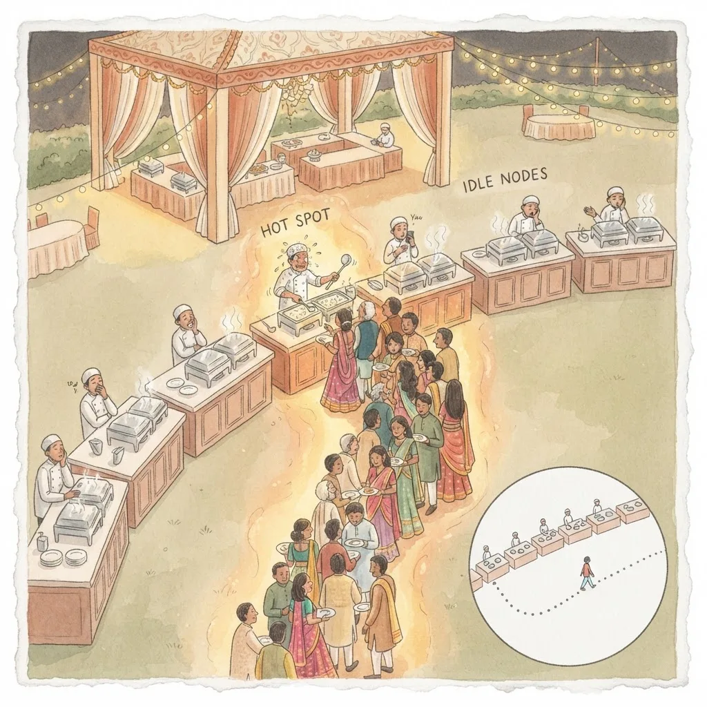
A wedding buffet with 10 counters. If guests spread out, 10 counters serve 10 times faster than one. If everyone queues at the paneer counter (hot spot), the other 9 cooks stand idle and the wedding is as slow as one counter. Random placement is like hiding each dish at a random counter: the load is even, but to find the gulab jamun you must walk to all 10. Where it breaks: guests choose counters themselves; in a database the partitioning rule decides where each request goes.
10 nodes, each can do 1,000 requests/second. Total traffic: 5,000 requests/second.
Same cluster, same total load: the fair version copes easily, the skewed version falls over because of one node. That is why the chapter cares so much about hot spots.
Throughput of a partitioned system is limited by its most loaded node, because requests for that node's keys can't be served by anyone else. That is why "even" matters so much. Random placement makes data even but turns every read into an all-node query. The trick of the rest of the chapter: derive the partition deterministically from the key, so that any reader can compute where a key lives, while still spreading load.
One way to partition is to give each partition a continuous range of keys, from some minimum to some maximum, like the volumes of a paper encyclopedia (Figure 6-2). If you know the boundaries between ranges, you can easily work out which partition contains a key. If you also know which partition is on which node, you can send your request straight to the right node (or, with the encyclopedia, pick the right book off the shelf).
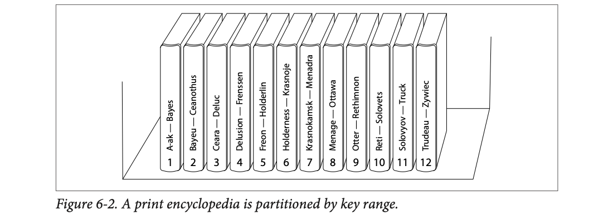
Each book is a partition. The spine shows its first and last key: volume 1 holds every title from "A-ak" to "Bayes", volume 2 from "Bayeu" to "Ceanothus", and so on up to volume 12, "Trudeau" to "Zywiec". The ranges touch with no gaps, so every possible title belongs to exactly one book. Notice the ranges are not equal slices of the alphabet: volume 1 covers all of A and part of B, while volume 12 covers T (part), U, V, W, X, Y and Z, because few words start with those letters.
Ranges are not evenly spaced, because the data may not be evenly distributed. In Figure 6-2, volume 1 has words starting with A and B, but volume 12 has words starting with T, U, V, X, Y and Z. Simply giving each volume two letters of the alphabet would make some volumes much bigger than others. To spread data evenly, the partition boundaries must adapt to the data.
Boundaries can be chosen manually by an administrator, or the database can choose them automatically (plate 13, "Rebalancing partitions", printed p.201 / pdf p223). This strategy is used by BigTable, its open-source equivalent HBase [2, 3], RethinkDB, and MongoDB before version 2.4 [4].
Sorted keys inside each partition. Within each partition, keys can be kept in sorted order (see "SSTables and LSM-trees", ch03, printed p.74 / pdf p96). Advantages:
The downside: hot spots from certain access patterns. If the key is a timestamp, partitions correspond to ranges of time, e.g. one partition per day. Because sensor data is written to the database as it happens, all writes go to the same partition (today's). That partition is overloaded with writes while the others sit idle [5].
The fix: don't use the timestamp as the first element of the key. For example, prefix each timestamp with the sensor name, so partitioning is first by sensor name and then by time. If many sensors are active at once, the write load spreads more evenly across partitions. The cost: to fetch the values of several sensors within a time range, you now need a separate range query for each sensor name.
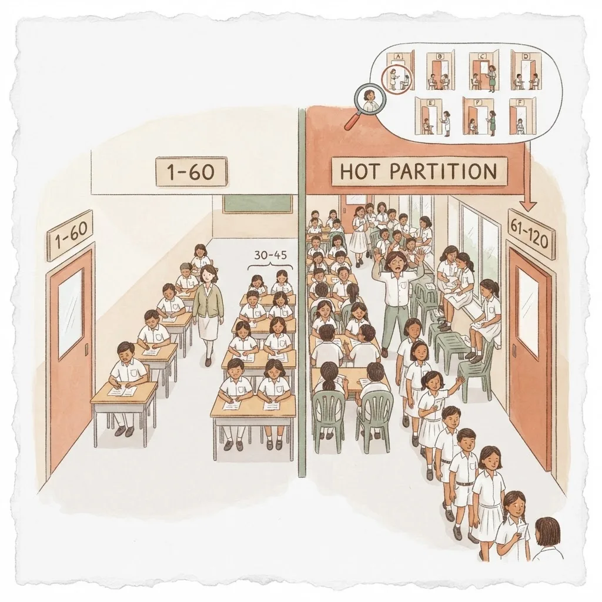
Exam-hall seating by roll-number range: Hall A has roll numbers 1–60, Hall B 61–120. Finding a student is instant, and "everyone from 30 to 45" are sitting together (a range scan). Now imagine late admissions get the next roll numbers: every new student walks into the last hall (the "today" partition), which overflows while the others are calm. Seating by section name first, then roll number spreads newcomers across halls, but "all late admissions" now means visiting each section's hall. Where it breaks: halls have fixed seats; database ranges can be resized (plate 13).
Range partitioning keeps neighbouring keys together. That is good for reads that want neighbours (scans), and bad for writes that all arrive at the same neighbourhood at once. Timestamps, auto-increment IDs and any "always increasing" key send every new write to the end of the key space, which is always one partition. Moving a well-spread field (sensor name) in front of the timestamp turns one write hot spot into many evenly-busy partitions, at the price of splitting a cross-sensor scan into one scan per sensor.
Readings from sensor "oak" on 2014-04-19 at 17:08:10. Key = 2014-04-19 17:08:10 → partition "2014-04-19" (today). Key = oak|2014-04-19 17:08:10 → partition m–q. Query "oak, all of April" = one range scan from oak|2014-04-01 to oak|2014-04-30 23:59:59. Query "all 8 sensors, April" = 8 range scans, one per sensor name.
Because of this risk of skew and hot spots, many distributed datastores use a hash function to decide the partition for a key.
A good hash function takes skewed data and makes it uniformly distributed. Say you have a 32-bit hash function that takes a string. Give it any new string and it returns a seemingly random number between 0 and 2³² − 1 (about 4.3 billion). Even if the input strings are very similar, their hashes are evenly spread across that range. Figure 6-3 shows this.
The hash used for partitioning does not need to be cryptographically strong (it is not protecting secrets, only spreading keys). For example, Cassandra and MongoDB use MD5 (Message Digest 5, an old, fast hash function), and Voldemort uses the Fowler–Noll–Vo (FNV) function.
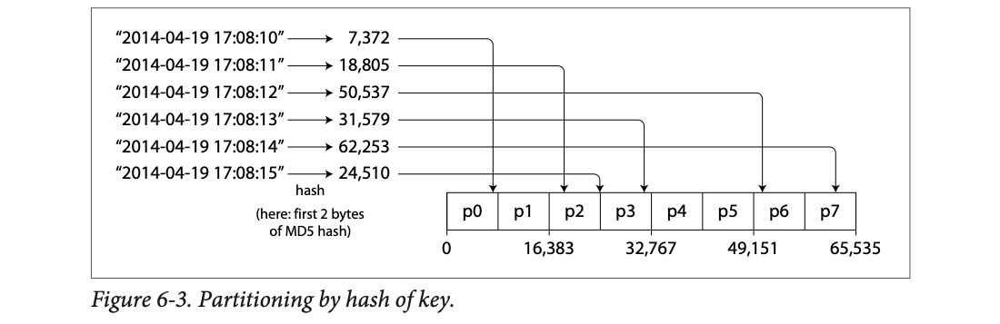
On the left are six keys that differ only in the last second: "…17:08:10" to "…17:08:15". In a key-range scheme they would all sit side by side in one partition. Each is hashed (here: only the first 2 bytes of the MD5 hash, so a number from 0 to 65,535). The hashes jump around: 7,372; 18,805; 50,537; 31,579; 62,253; 24,510. The bar at the bottom cuts 0–65,535 into 8 equal hash ranges p0…p7 (each 8,192 wide; the ticks mark 16,383, 32,767 and 49,151). So the six neighbouring keys land in p0, p2, p6, p3, p7 and p2: spread out, not bunched.
Now each partition is given a range of hashes (not a range of keys), and every key whose hash falls in a partition's range is stored there. This is good at spreading keys fairly among partitions. The partition boundaries can be evenly spaced, or chosen pseudo-randomly (in which case the technique is sometimes known as consistent hashing).
Consistent hashing, as defined by Karger et al. [6], is a way of evenly spreading load across an internet-wide system of caches, such as a CDN (content delivery network). It uses randomly chosen partition boundaries to avoid needing central control or distributed consensus.
Note: "consistent" here has nothing to do with replica consistency (Chapter 5) or ACID consistency (ACID = atomicity, consistency, isolation, durability; Chapter 7). It describes a particular approach to rebalancing.
As plate 14 shows, this particular approach doesn't work very well for databases [7], so it is rarely used in practice. (Some databases' documentation still says "consistent hashing", but it is usually inaccurate.) Because this is so confusing, the book says: avoid the term "consistent hashing" and just call it hash partitioning.
The price of hashing: no efficient range queries. Using the hash of the key loses a nice property of key-range partitioning. Keys that were once adjacent are now scattered across all partitions, so their sort order is lost.
Cassandra's compromise between the two strategies [10, 11, 12]. A Cassandra table can have a compound primary key of several columns. Only the first part of the key is hashed to choose the partition; the other columns act as a concatenated index for sorting the data inside Cassandra's SSTables. So:
This gives an elegant data model for one-to-many relationships. Example: on a social media site one user posts many updates. If the primary key for updates is (user_id, update_timestamp), you can efficiently fetch all updates by one user in some time interval, sorted by timestamp. Different users may live on different partitions, but within each user, the updates are stored in timestamp order on a single partition.
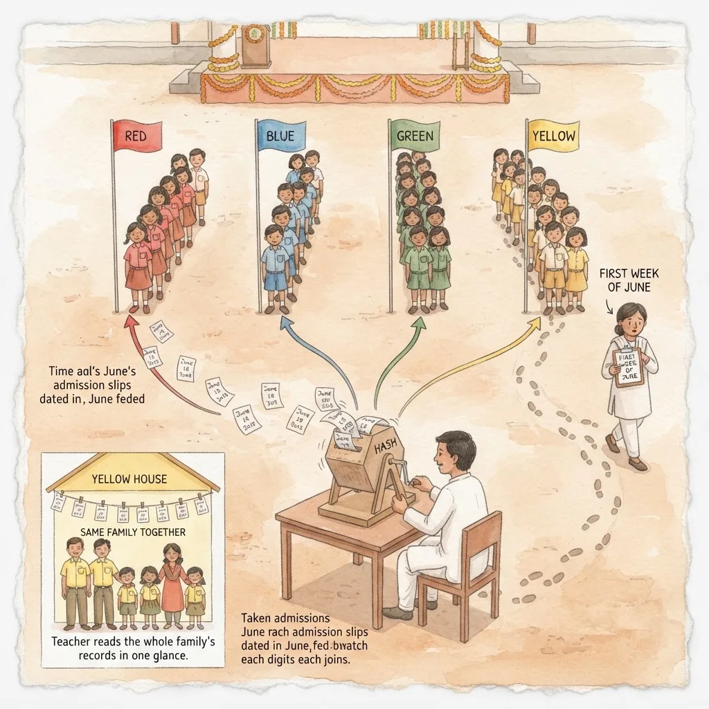
A school assigns students to four houses (Red, Blue, Green, Yellow) by the last digit of a scrambled admission code. Houses come out the same size even if most admissions happen in June, because the code jumps around. But "everyone admitted in the first week of June" are now spread over all four houses: you must ask every house (no range queries). Cassandra's trick is like assigning a whole family (user_id) to one house by the scramble, and inside the house keeping that family's records in date order: "all of the Sharma family's records from March" is one quick look. Where it breaks: houses are four; real systems use thousands of hash ranges.
A hash function destroys the relationship between "close keys" and "close positions": a one-character change in the input flips about half the output bits. That is exactly what removes the timestamp hot spot, and exactly what kills range scans, since the order of hashes has no relation to the order of keys. A compound key gets both: hashing the first column gives the spread across machines; the sorted remaining columns give order within one partition.
Hash range width = 65,536 ÷ 8 = 8,192. "…17:08:10" → 7,372 → 7,372 ÷ 8,192 = 0.9 → p0. "…17:08:11" → 18,805 → 2.3 → p2. "…17:08:12" → 50,537 → 6.2 → p6. "…17:08:13" → 31,579 → 3.9 → p3. "…17:08:14" → 62,253 → 7.6 → p7. "…17:08:15" → 24,510 → 2.99 → p2. Six neighbours, five different partitions.
Modern Cassandra calls the hashed first part the partition key and the sorted remaining columns clustering columns; its default partitioner today uses the Murmur3 hash rather than MD5. The idea is the same as in the book.
Hashing a key to choose its partition reduces hot spots, but can't avoid them entirely. In the extreme case where all reads and writes are for the same key, every request still goes to the same partition.
This is unusual but not impossible. On a social media site, a celebrity user with millions of followers may cause a storm of activity when they do something [13] (reference 13 is a 2010 article claiming 3% of Twitter's servers were dedicated to Justin Bieber). That means a huge volume of writes to the same key: perhaps the celebrity's user ID, or the ID of the action people are commenting on. Hashing doesn't help: the hash of two identical IDs is still the same.
Today, most data systems can't automatically compensate for such a highly skewed workload, so it's the application's job to reduce the skew. A simple technique for a key known to be very hot: add a random number to the beginning or end of the key. Just a two-digit decimal random number splits the writes to that key evenly across 100 different keys, which can then be placed on different partitions.
The costs:
Perhaps in future data systems will detect and compensate for skewed workloads automatically, but for now you need to think through the trade-offs for your own application.
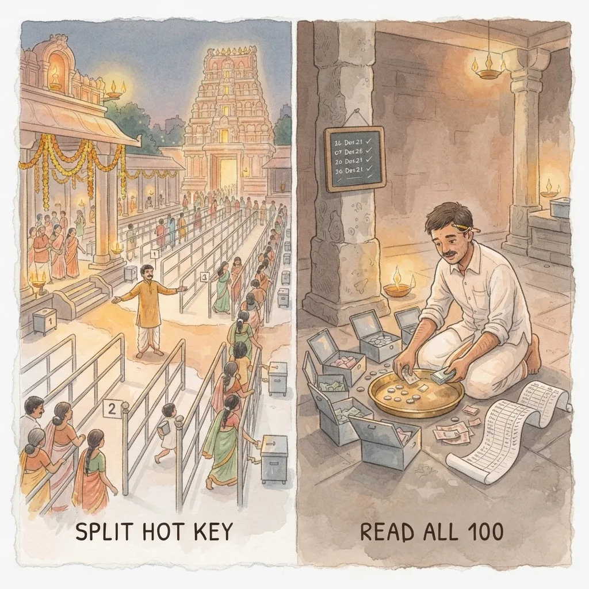
When a famous temple opens for a festival, one queue would stretch for kilometres. So the temple opens 100 numbered queues and sends each devotee to a random one: the crowd spreads out. But to know the total offerings at the end of the day, someone must open all 100 donation boxes and add them up (reads now do 100 times the work). And the temple only does this for festival days, so it needs a list of "which days are split" (bookkeeping). Where it breaks: the temple sees the crowd coming; a database usually doesn't know in advance which key will go viral.
Hashing spreads different keys. It can't spread the same key, because the partition is a pure function of the key. Appending a random suffix creates artificially different keys, so the hash function can now spread them. You trade one expensive thing (one overloaded partition for writes) for another (fan-in reads over 100 keys, and a registry of split keys). That is a good trade only for keys that are write-hot.
10,000 likes in a minute on one post. Unsplit: 10,000 writes hit one partition; 7 others get 0. Split into 100 keys over 8 partitions: roughly 1,250 writes per partition. Reading the total: unsplit = 1 key read; split = 100 key reads (spread over all 8 partitions) plus summing them.
So far every scheme relied on a key-value data model. If records are only ever accessed by their primary key, we can work out the partition from that key and route reads and writes to the partition responsible for it.
Things get more complicated with secondary indexes (see "Other indexing structures", ch03, printed p.82 / pdf p104). A secondary index usually doesn't identify a record uniquely. It's a way of searching for occurrences of a particular value:
Secondary indexes are the bread and butter of relational databases, and common in document databases too. Many NoSQL key-value stores (such as HBase and Voldemort) have avoided secondary indexes because of their added implementation complexity, but some (such as Riak) have started adding them because they are so useful for data modelling. And secondary indexes are the raison d'être (the whole reason to exist) of search servers such as Solr and Elasticsearch.
The problem: secondary indexes don't map neatly to partitions. There are two main approaches: document-based partitioning (plate 8) and term-based partitioning (plate 9).
A library stores books on shelves by accession number (primary key): give a number and the librarian walks straight to the shelf. Now a student asks: "all books by R. K. Narayan". The number tells you nothing about the author, so you need an extra catalogue (a secondary index). The question of this section is: where do you keep that catalogue when the books are split across several library buildings? Where it breaks: a librarian can browse the shelves by eye; a database must either scan every record in every partition or keep an index, and plates 8 and 9 are the two ways to place that index.
Used-car site, data partitioned by listing ID (0–499 → partition 0, 500–999 → partition 1).
The ID tells you the partition. The colour tells you nothing about the ID. The next two plates are the two ways to solve this.
The partition is chosen by the primary key. A secondary index is keyed by something else (color, word, user), and the records for one indexed value are spread over whatever partitions their primary keys chose. So you must pick: keep each partition's index next to its own records (cheap to update, but a search must ask everyone), or build one index over all records and partition that by the indexed value (cheap to search, but an update may touch several partitions).
Example: you run a website for selling used cars (Figure 6-4). Each listing has a unique ID, the document ID, and the database is partitioned by document ID (e.g. IDs 0 to 499 in partition 0, 500 to 999 in partition 1, etc.).
You want users to search for cars, filtering by color and by make, so you need a secondary index on color and make (in a document database these are fields; in a relational database, columns). If you have declared the index, the database does the indexing automatically. For example, whenever a red car is added, the database partition automatically adds its ID to the list of document IDs for the index entry color:red.
If your database only supports a key-value model, you might be tempted to build a secondary index yourself in application code: a mapping from value to document IDs. If you do, take great care to keep the index consistent with the underlying data. Race conditions and intermittent write failures (some changes saved, others not) can very easily make the data go out of sync. See "The need for multi-object transactions" in ch07 (printed p.222 / pdf p244).
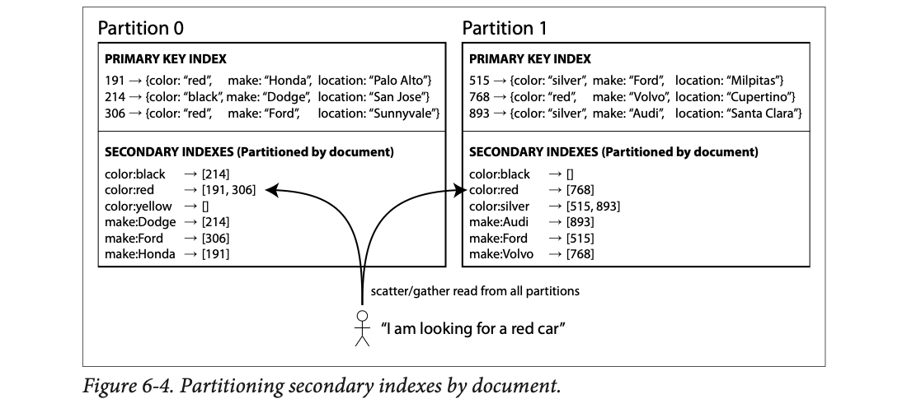
Top half of each box: the primary key index, i.e. the actual cars. Partition 0 holds IDs 191 (red Honda), 214 (black Dodge), 306 (red Ford). Partition 1 holds 515 (silver Ford), 768 (red Volvo), 893 (silver Audi). Bottom half: each partition's own secondary index, listing only its own IDs: in partition 0, color:red → [191, 306]; in partition 1, color:red → [768]. (Empty entries like color:yellow → [] just show nothing matched.) The person at the bottom wants a red car; the two arrows show the query going to both partitions and the answers being combined: scatter/gather.
In this approach each partition is completely separate: it keeps its own secondary indexes covering only the documents in that partition, and doesn't care what's stored in other partitions. To write (add, remove or update a document), you only deal with the one partition that holds that document ID. That's why a document-partitioned index is also called a local index (as opposed to a global index, next plate).
Reading needs care. Unless you've done something special with document IDs, there's no reason why all cars of one color or one make would be in the same partition. In Figure 6-4, red cars are in both partition 0 and partition 1. So to search for red cars you must send the query to all partitions and combine the results.
This way of querying a partitioned database is called scatter/gather, and it can make read queries on secondary indexes quite expensive. Even if you query the partitions in parallel, scatter/gather is prone to tail latency amplification (see "Percentiles in Practice", ch01, printed p.14 / pdf p36): the whole query is as slow as the slowest partition's reply.
It is nevertheless widely used: MongoDB, Riak [14], Cassandra [15], Elasticsearch [16], SolrCloud [17] and VoltDB [18] all use document-partitioned secondary indexes. Most database vendors recommend structuring your partitioning so that secondary index queries can be served from a single partition, but that isn't always possible, especially when one query uses several secondary indexes (such as filtering cars by color and by make at the same time).
A bank with branches in Pune and Nashik. Each branch keeps its own register of customers by surname (local index). Opening an account touches only one branch's register: easy. But "find every customer named Sharma" means phoning every branch and adding up the answers, and you can't hang up until the slowest branch manager finds the register. Where it breaks: a database calls all branches at once (in parallel), but it still waits for the slowest one.
Local index = the index lives with the data, so one write updates one partition in one local operation (no distributed coordination). The cost moves to reads: no partition knows what the others hold, so every index query fans out to all N partitions. Latency becomes the maximum of N response times, and the chance that at least one is slow grows quickly with N. Each extra partition also adds load to every search.
"Red cars" in Figure 6-4: ask partition 0 → [191, 306]; ask partition 1 → [768]; combine → [191, 306, 768]. Two requests for one answer. With 100 partitions and a modelled 1% chance per partition of a slow reply, 1 − 0.99¹⁰⁰ ≈ 63% of searches would be slow.
Instead of each partition having its own local index, we can build a global index that covers data in all partitions. But we can't store it on one node: it would likely become a bottleneck and defeat the purpose of partitioning. A global index must also be partitioned, but it can be partitioned differently from the primary key index.
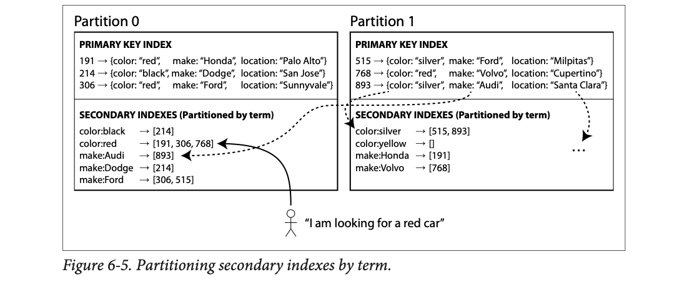
The cars (primary key index, top half) are exactly where they were in Figure 6-4. Only the bottom half changed. Now color:red → [191, 306, 768] lists red cars from both partitions, and it lives in partition 0 only. Colors starting with a–r are indexed in partition 0, s–z in partition 1. Makes split between f and h: Audi, Dodge, Ford in partition 0; Honda, Volvo in partition 1. The dotted arrows follow car 893 (silver Audi, stored in partition 1): its make:Audi entry goes to partition 0, and its color:silver entry stays in partition 1. The "…" arrow hints at more index entries elsewhere. The person looking for a red car now asks one partition (solid arrow).
Figure 6-5: red cars from all partitions appear under color:red, but the index is partitioned so that colors starting with a to r are in partition 0 and colors starting with s to z in partition 1. The index on make is partitioned similarly (boundary between f and h).
This is called term-based partitioning, because the term you're looking for decides the partition of the index. Here a term would be color:red. The name "term" comes from full-text indexes (a kind of secondary index), where the terms are all the words that occur in a document.
As before, you can partition the index by the term itself or by a hash of the term:
Rather than scatter/gather over all partitions, a client only asks the partition holding the term it wants.
Writes are slower and more complicated: a write to a single document may now affect several partitions of the index (every term in the document might be on a different partition, on a different node).
In an ideal world the index would always be up to date: every document written would appear in the index immediately. In a term-partitioned index that would need a distributed transaction across all partitions affected by a write, which not all databases support (see Chapter 7 and Chapter 9).
In practice, updates to global secondary indexes are often asynchronous: if you read the index shortly after a write, the change you just made may not be there yet. For example, Amazon DynamoDB states that its global secondary indexes are updated within a fraction of a second normally, but may see longer propagation delays when there are infrastructure faults [19].
Other uses of global term-partitioned indexes: Riak's search feature [20], and the Oracle data warehouse, which lets you choose between local and global indexing [21].
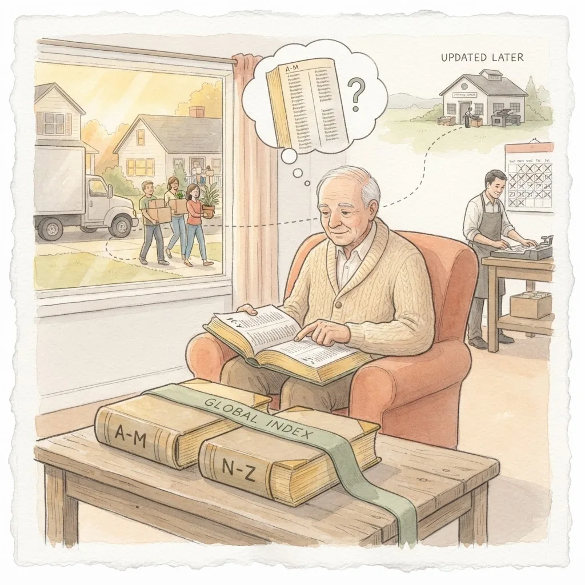
The old telephone directory for a big city came in volumes: A–M and N–Z. To find every "Sharma" you open one volume (fast reads). But when a family moves in, several volumes must be updated: the surname volume, the street-name volume, the profession "yellow pages" volume, often printed weeks later (asynchronous index updates). Look up a new neighbour too early and they are "not in the book yet". Where it breaks: DynamoDB catches up in a fraction of a second, not weeks.
A global index flips the cost. Reads go to exactly one index partition (no fan-out, no tail-latency amplification). But a single document produces several index entries (one per term), and each term's partition is chosen by the term, not the document, so one write fans out to several partitions. Keeping them all exactly in step needs a distributed transaction; most systems instead update the index asynchronously, accepting that the index briefly lags the data (the same flavour of lag as replication lag in Ch.5).
Add car 420, red Tata. Local index: 420 is in 0–499, so partition 0 stores the car and adds 420 to its own color:red and make:Tata: 1 partition touched. Global index: partition 0 stores the car; color:red ("r" is in a–r) goes to partition 0; make:Tata ("t" is after h) goes to partition 1: 2 partitions touched. Search "red" right after: local index finds it on the next scatter/gather; global index may miss it until the async update lands.
| By document (local) | By term (global) | |
|---|---|---|
| Where index entries live | Same partition as the document | Partition chosen by the term (or hash of term) |
| Write a document | 1 partition | Several partitions (one per term's partition) |
| Read by index value | All partitions (scatter/gather) | 1 partition |
| Freshness | Updated with the document | Often asynchronous (may lag) |
| Used by (book) | MongoDB, Riak, Cassandra, Elasticsearch, SolrCloud, VoltDB | DynamoDB global indexes, Riak search, Oracle DW (choice) |
Over time, things change in a database:
All of these require data to be moved from one node to another. Moving data around between nodes in the cluster is called rebalancing.
Whatever partitioning scheme you use, rebalancing is usually expected to meet some minimum requirements:
Strategies for rebalancing. There are a few different ways of assigning partitions to nodes [22]. The next four plates go through them one by one: hash mod N (how not to), a fixed number of partitions, dynamic partitioning, and other strategies (old Cassandra).
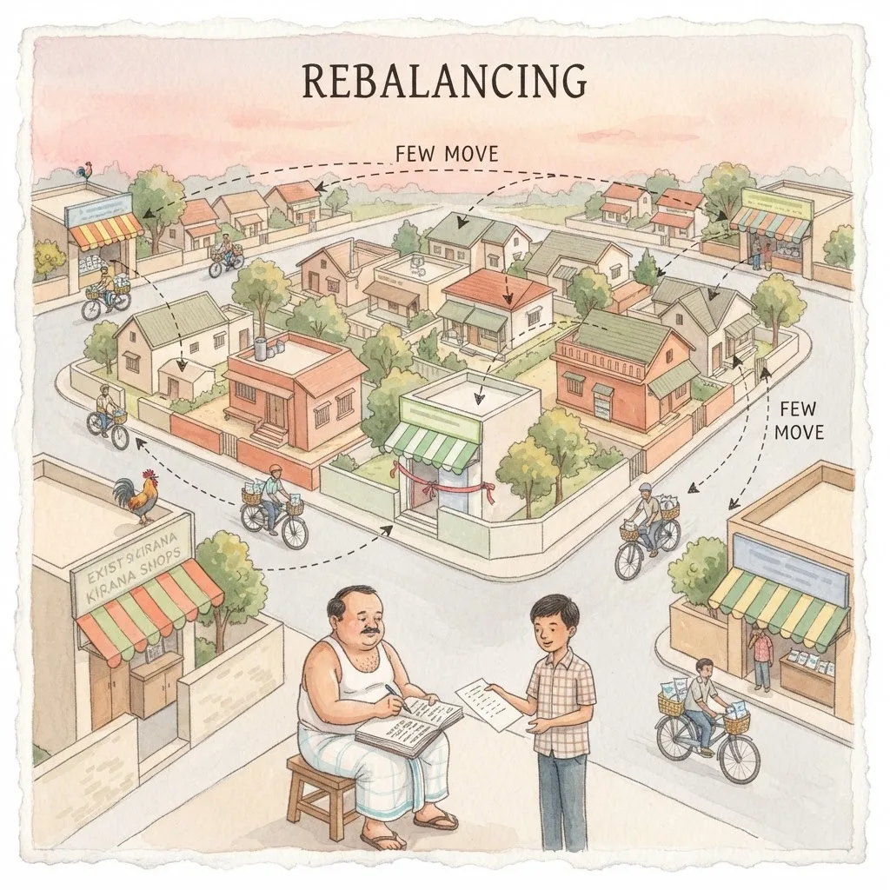
A chain of kirana shops delivers to a colony. When the chain opens a new shop, it should take a few customers from each old shop so all shops are equally busy (fair), keep delivering milk every morning while the change happens (no downtime), and not reassign customers who don't need to move (minimum movement: every reassigned customer means updating a delivery register). Where it breaks: moving a customer is a phone call; moving a partition is copying gigabytes over the network.
And the three rules checked against each: after the move, load is fair; reads and writes keep working during the move; and only the partitions that must move are copied (not the whole database).
The three requirements pull against each other. Perfect fairness after a change is easy if you're willing to reshuffle everything; minimum movement is easy if you're willing to stay unfair. Good schemes separate two mappings, key → partition (never changes) and partition → node (changes on rebalance), so that only the second, much smaller mapping changes.
When partitioning by hash of key, we said (Figure 6-3) it's best to divide the possible hashes into ranges and assign each range to a partition: key goes to partition 0 if 0 ≤ hash(key) < b₀, to partition 1 if b₀ ≤ hash(key) < b₁, and so on.
Why not just use mod (the % operator)? For example, hash(key) mod 10 gives a number from 0 to 9 (if the hash is written as a decimal number, mod 10 is just its last digit). With 10 nodes numbered 0 to 9, that looks like an easy way to assign each key to a node.
The problem: if the number of nodes N changes, most keys must move from one node to another. Example from the book: say hash(key) = 123456.
That makes rebalancing excessively expensive. We need an approach that doesn't move data around more than necessary.
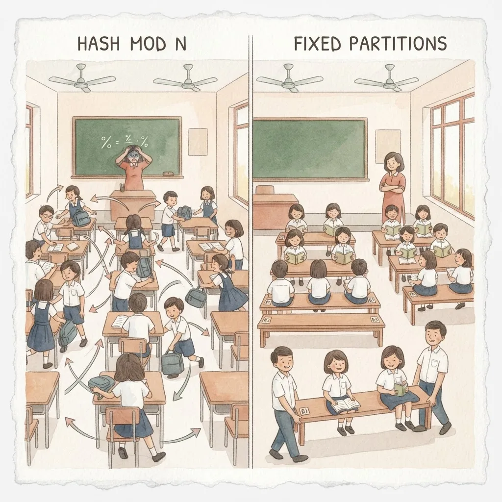
Students sit at desk number = roll number mod (number of desks per row). Add one desk to each row and almost every student must change seat, even though only a few new seats appeared. Compare: students sit by bench (partition) and benches are assigned to rows; a new row just takes a few benches from the others, and students on the other benches never stand up. Where it breaks: students move in seconds; keys move across a network.
h mod N and h mod (N+1) agree only by coincidence: for random hashes they match for about 1 in (N+1) keys. So adding one node moves about N/(N+1) of all keys, i.e. ~91% when going 10 → 11, even though the ideal is to move only 1/(N+1) ≈ 9% (just enough to fill the new node). The fix is to put a fixed layer in between (key → partition) that doesn't depend on N.
Going from 10 to 11 nodes with 1 TB per node (modelled, 10 TB in total): mod N moves about 10/11 × 10 TB ≈ 9.1 TB over the network. The ideal (new node gets its fair share) moves 10 TB ÷ 11 ≈ 0.9 TB. That's 10× more traffic for mod N.
A fairly simple solution: create many more partitions than there are nodes, and assign several partitions to each node. For example, a database on a cluster of 10 nodes may be split into 1,000 partitions from the start, so about 100 partitions per node.
If a node is added, the new node steals a few partitions from every existing node until partitions are fairly distributed again (Figure 6-6). If a node is removed, the same happens in reverse.
Only entire partitions move between nodes. The number of partitions doesn't change, nor does the assignment of keys to partitions. The only thing that changes is the assignment of partitions to nodes. This change isn't immediate (it takes time to transfer a large amount of data over the network), so the old assignment is used for any reads and writes that happen while the transfer is in progress.
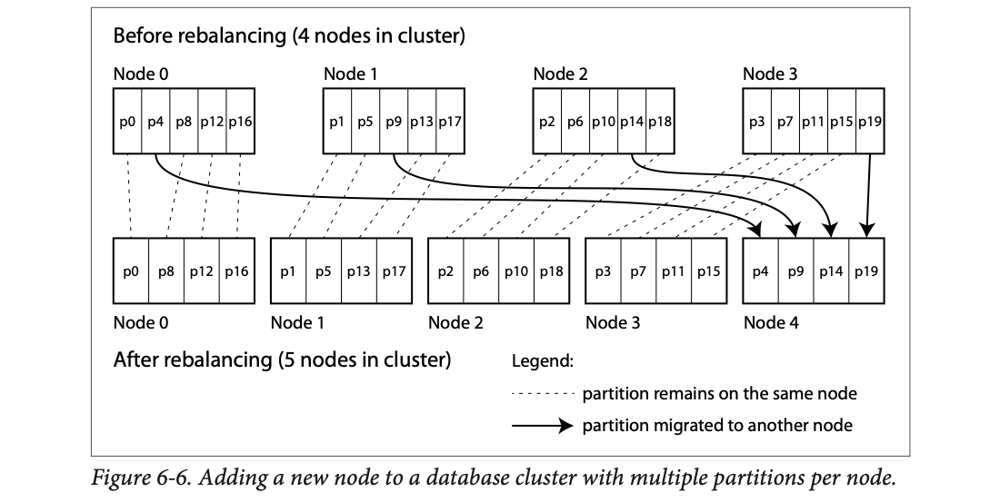
Top row: 4 nodes, 20 partitions, 5 each, dealt out like cards (p0 to node 0, p1 to node 1, …). Bottom row: a fifth node joins. Dashed lines = partition stays on the same node; solid arrows = partition migrated. Exactly four arrows: p4 from node 0, p9 from node 1, p14 from node 2, p19 from node 3, all into node 4. Now every node has 4 partitions. 16 partitions didn't move at all; 4 of 20 (20%) moved, which is exactly the new node's fair share (1/5).
Mismatched hardware. In principle you can even account for machines of different power: by assigning more partitions to more powerful nodes, you make them take a greater share of the load.
This approach is used in Riak [14], Cassandra since version 1.2 [23], Elasticsearch [24], Couchbase [9] and Voldemort [25].
Choosing the number. In this setup the number of partitions is usually fixed when the database is first set up and not changed afterwards. Splitting and merging partitions is possible in principle (next plate), but a fixed number is operationally simpler, so many fixed-partition databases don't implement splitting. Therefore:
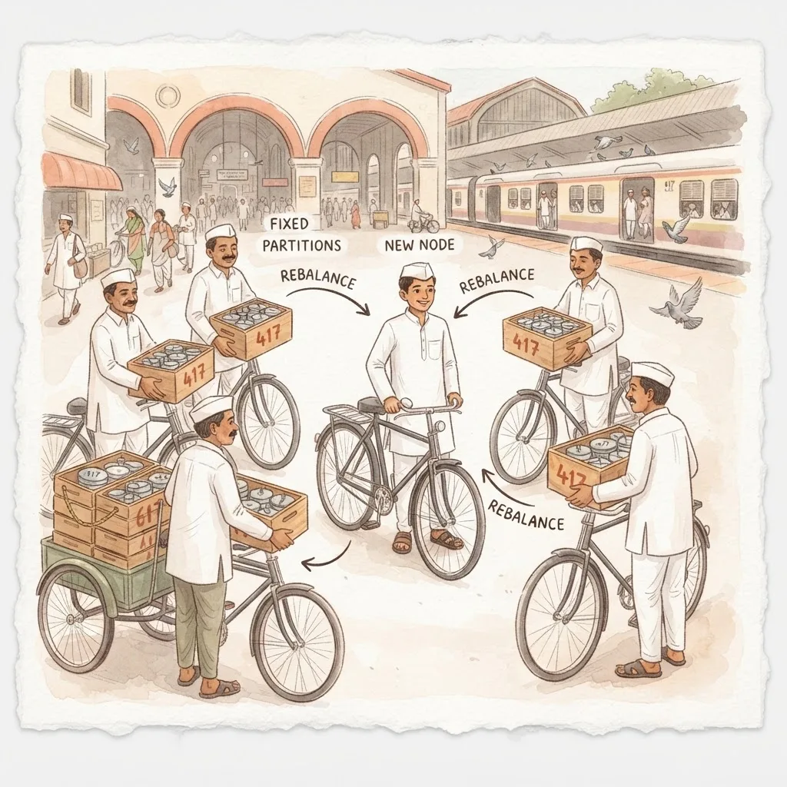
A dabbawala team packs tiffins into 1,000 crates (partitions) that never change: your tiffin is always in crate 417. Crates are loaded onto bikes (nodes). When a new rider joins, every rider hands over a few whole crates; nobody re-sorts tiffins. While a crate is being handed over, the old rider still delivers it (old assignment used during transfer). A rider with a bigger bike carries more crates (mismatched hardware). Where it breaks: you can never have more riders than crates, so pick enough crates on day one; but every crate needs a label and a check, so not a million.
Two maps: key → partition (fixed forever, e.g. by hash range) and partition → node (small table, changes on rebalance). Rebalancing edits only the small table and copies whole partitions. Because there are many partitions per node, the new node can take a tiny slice from everyone, so movement is close to the ideal 1/(N+1) of the data and the result is fair. Requests keep using the old table until the copy finishes, then switch.
10 nodes, 1,000 partitions → ~100 each. Add node 11: fair share = 1,000 ÷ 11 ≈ 91 partitions. Each old node gives up about 9, so the newcomer gets ≈ 90–91 partitions; about 9% of the data moves. Figure 6-6 is the same with small numbers: 20 partitions, 4 → 5 nodes, 4 partitions (20%) move.
| Nodes | Partitions | Per node | Partitions moved | Keys re-mapped to a new partition | |
|---|---|---|---|---|---|
| Figure 6-6 before | 4 | 20 | 5 | – | – |
| Figure 6-6 after | 5 | 20 | 4 | 4 (20%) | 0 |
| Book's 10-node cluster | 10 | 1,000 | ≈100 | – | – |
| …add node 11 (arithmetic) | 11 | 1,000 | ≈91 | ≈91 (≈9%) | 0 |
The last column is the point: the key → partition map never changes. Only whole partitions change owner.
A fixed number of partitions works well with hash partitioning, because the hash spreads keys uniformly over the whole range of hashes.
For key-range partitioning (plate 4), fixed boundaries would be very inconvenient: get the boundaries wrong and you could end up with all the data in one partition and all the others empty. Reconfiguring boundaries by hand would be very tedious.
So key-range-partitioned databases such as HBase and RethinkDB create partitions dynamically:
Each partition is assigned to one node, and each node can handle several partitions, as before. After a large partition is split, one of its two halves can be moved to another node to balance the load. In HBase, partition files are transferred through HDFS (Hadoop Distributed File System), the underlying distributed file system [3].
Advantage: the number of partitions adapts to the total data volume. Little data → few partitions → small overhead. Huge data → each partition's size is capped at a configurable maximum [22].
Caveat: an empty database starts with a single partition, since there's no prior information about where to draw boundaries. While the dataset is small (until the first split), all writes go to a single node while the others sit idle. To mitigate this, HBase and MongoDB allow an initial set of partitions to be configured on an empty database: pre-splitting. For key-range partitioning, this requires you to already know what the key distribution will look like [26, 4].
Dynamic partitioning isn't only for key ranges: it works equally well with hash-partitioned data. MongoDB since version 2.4 supports both key-range and hash partitioning, and splits partitions dynamically in either case.
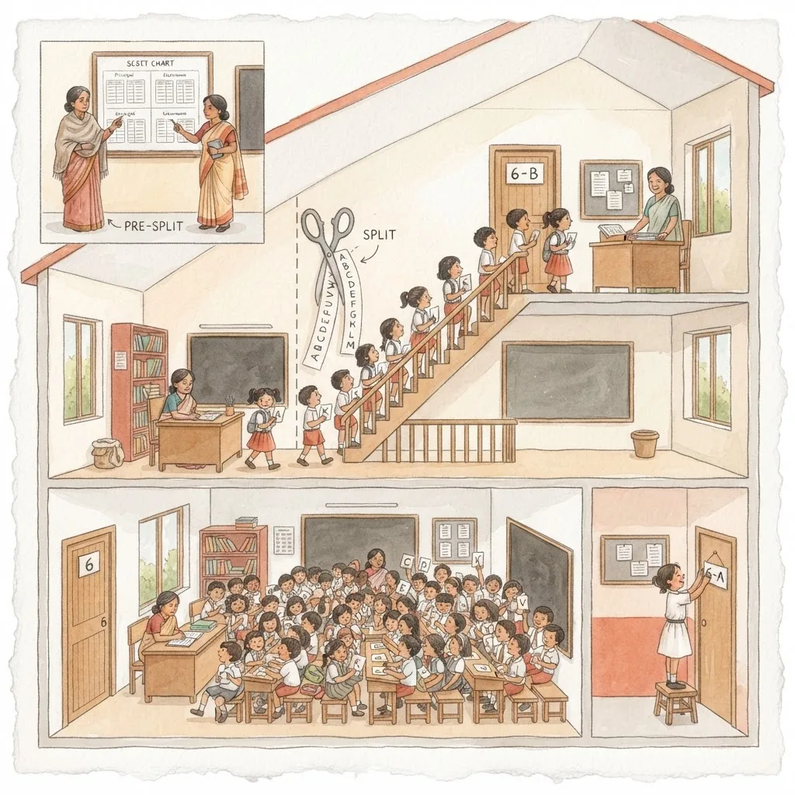
A school starts with one section of Class 6. When it crosses 60 students, it splits into 6-A (surnames A–K) and 6-B (L–Z); 6-B moves to the empty classroom upstairs. If many students leave, 6-A and 6-B merge back. On the first day, though, all students crowd into one room while the others are empty, unless the principal pre-splits into four sections by guessing how surnames are spread. Where it breaks: students don't mind sharing; a single partition really is a single machine's limit.
The number of partitions follows the data size: few when small (low overhead), many when big (each one capped). The split point is wherever half the data falls, not a fixed letter.
For key ranges, the right boundaries depend on the data, which you don't know in advance. Splitting at the size threshold finds the boundaries automatically: dense regions of key space get many small partitions, sparse regions get few. It's the same idea as a B-tree node splitting when full, just at the level of whole machines' worth of data. The cost is the cold start (one partition) and the work of moving halves around.
Before version 1.2, Cassandra used consistent hashing with pseudo-random partition boundaries, as originally described by Karger et al. [6]. Instead of several small partitions per node, it used one big partition per node, covering a large continuous range of hashes.
Problems:
For those reasons, Cassandra's partitioning strategy was replaced with the fixed-number-of-partitions approach (plate 12) [22].
These problems can be avoided by using a better hash function [7] (reference 7: Lamping and Veach, "A Fast, Minimal Memory, Consistent Hash Algorithm", 2014). But in practice the most widely used partitioning models are either hashing with a fixed number of partitions, or dynamic partitioning by key range (when range queries are needed).
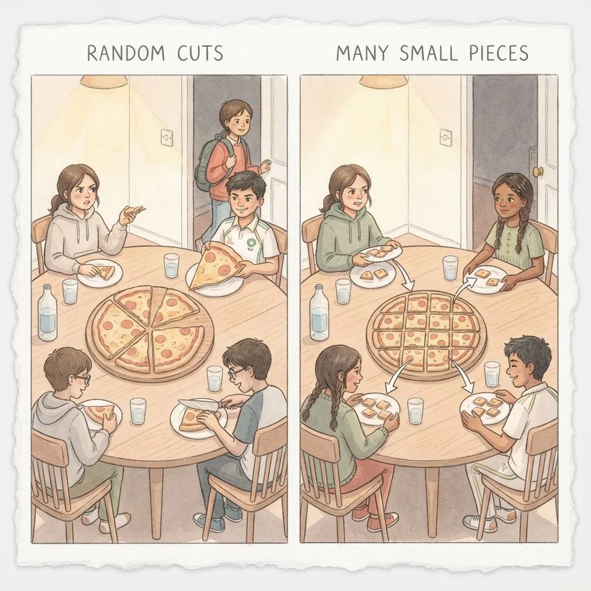
Four friends split a big round pizza by each making one random cut and taking the slice up to the next cut: someone ends up with half the pizza, someone with a sliver. When a fifth friend arrives, one person must cut their slice in half for them. Cutting the pizza into 64 small pieces first and dealing them out is fair, and a newcomer gets a few pieces from everyone. Where it breaks: a pizza doesn't keep serving traffic while you cut it.
Old Cassandra, 3 nodes each owning one random range of the hash space: say 50%, 30% and 20%. Already unfair. Add a 4th node: it picks a random point, which lands inside the 50% range and splits it, giving the new node, say, 25%.
Only node A helped the newcomer, and it had to split its range and stream a huge chunk while still serving queries. With many small partitions per node (plate 12), every node gives a little instead.
With n random points on a circle, the gaps between them vary a lot: the largest arc is typically several times the smallest. Many partitions per node average that randomness away. And with one range per node, a joining node can only relieve its single neighbour (who must split a big range under load), not take a little from everybody.
Cassandra 1.2 introduced virtual nodes (vnodes): each node owns many small token ranges (256 by default at the time; newer versions recommend fewer, with a smarter token allocator). That is the "many partitions per node" idea, and it's why the book calls Cassandra's partitions "vnodes" in the terminology sidebar.
An important question glossed over so far: does rebalancing happen automatically or manually?
It's a gradient:
Fully automatic is convenient: less operational work for normal maintenance. But it can be unpredictable. Rebalancing is expensive: it re-routes requests and moves a lot of data between nodes. Done carelessly, it can overload the network or the nodes and hurt the performance of other requests.
It is dangerous combined with automatic failure detection. Say one node is overloaded and temporarily slow to respond. The other nodes conclude it is dead, and automatically rebalance to move load away from it. That puts extra load on the other nodes and on the network, possibly overloading more nodes and causing a cascading failure.
So it can be good to have a human in the loop for rebalancing. It's slower than fully automatic, but it can help prevent operational surprises.
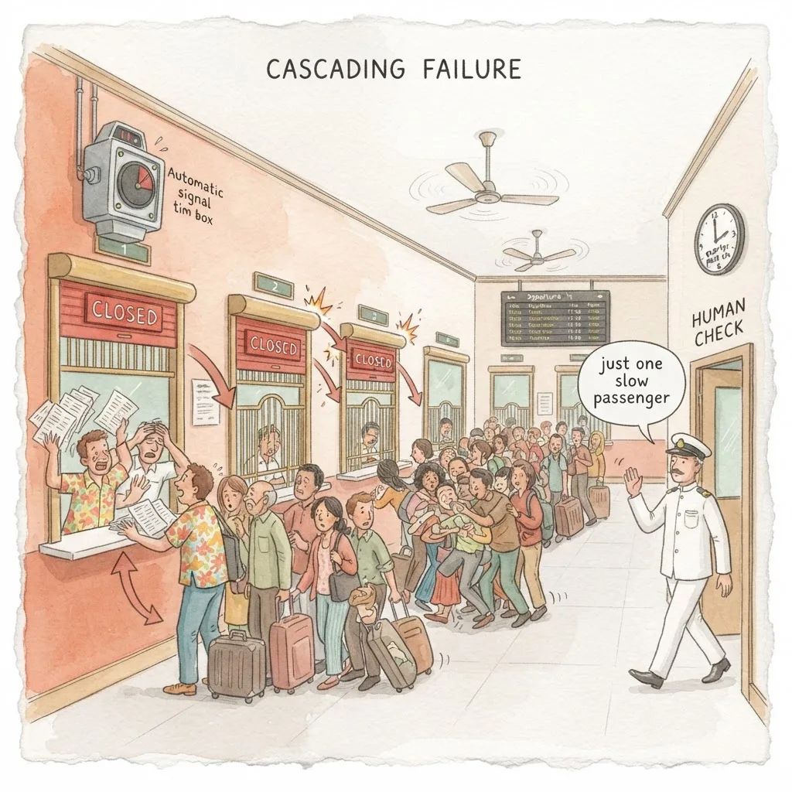
A busy railway reservation counter is slow because of one difficult passenger. A rule says "if a counter is slow for 2 minutes, close it and send its queue to the other counters". The other counters, already busy, now get the extra queue, slow down, and the rule closes them too: soon the whole station is closed. A station master who looks first ("it's just one slow passenger") avoids the panic. Where it breaks: a station master can't be awake 24/7 either; that's the trade-off.
A failure detector can't tell "slow" from "dead" (Chapter 8 explains why). Rebalancing in response adds data transfer and new request traffic exactly where capacity is already tight. That's positive feedback: each reaction creates the condition that triggers the next reaction. A human approval step breaks the loop at the cost of slower reaction to real failures.
The dataset is now partitioned across many nodes on many machines. Open question: when a client makes a request, how does it know which node to connect to? As partitions are rebalanced, the assignment of partitions to nodes changes. Somebody must stay on top of those changes to answer: "If I want to read or write the key 'foo', which IP address and port number do I need to connect to?"
This is one case of a more general problem called service discovery, which isn't limited to databases. Any software reachable over a network has it, especially if it aims for high availability (running redundantly on several machines). Many companies wrote their own in-house service discovery tools, and many have been released as open source [27].
At a high level there are three approaches (Figure 6-7):
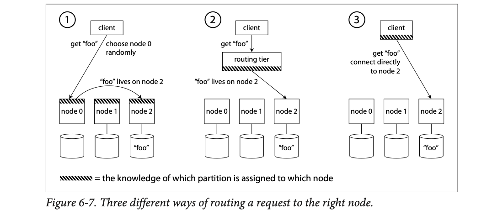
In each panel, "foo" lives in the database under node 2. The hatched stripe marks who holds the routing knowledge (which partition is on which node). Panel 1: every node has the stripe; the client picks node 0 at random, and node 0 forwards to node 2 (curved arrow). Panel 2: only the routing tier has the stripe; nodes don't need it. Panel 3: the client itself has the stripe and goes straight to node 2: fewest hops, but every client must keep its map up to date.
The key problem in all three: how does the component making the routing decision (a node, the routing tier, or the client) learn about changes in the assignment of partitions to nodes? It's hard because all participants must agree; otherwise requests go to the wrong nodes and aren't handled correctly. There are protocols for reaching consensus in a distributed system, but they're hard to implement correctly (Chapter 9).
Many distributed data systems rely on a separate coordination service such as ZooKeeper to keep track of this cluster metadata (Figure 6-8):
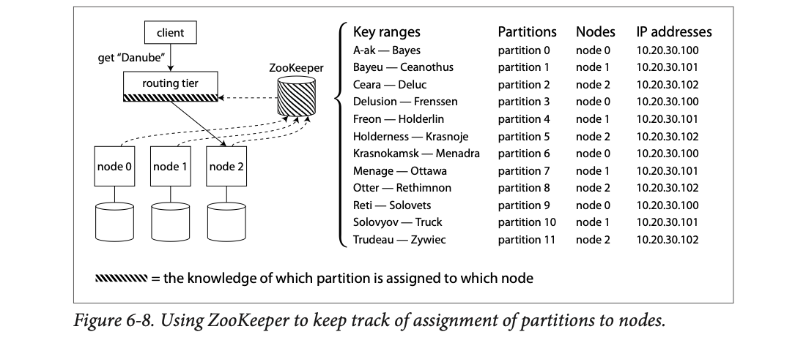
Left side: the request path. The client asks for "Danube"; the routing tier (hatched: it holds the knowledge) sends it to node 2. Dashed arrows: each node registers with ZooKeeper, and ZooKeeper pushes the mapping to the routing tier. Right side: what ZooKeeper stores. The same 12 encyclopedia ranges as Figure 6-2, now called partitions 0–11, dealt round-robin to 3 nodes, each node with its IP address (node 0 = 10.20.30.100, node 1 = .101, node 2 = .102). "Danube" falls between "Ceara" and "Deluc", so partition 2, node 2, 10.20.30.102: which matches the arrow.
Who uses what (as of the book):
Finding the machines themselves. With a routing tier, or when sending requests to a random node, clients still need the IP addresses of the machines to connect to. But those addresses change much more slowly than the partition-to-node assignment, so plain DNS (Domain Name System, the internet's phone book from names to IP addresses) is often enough for this.
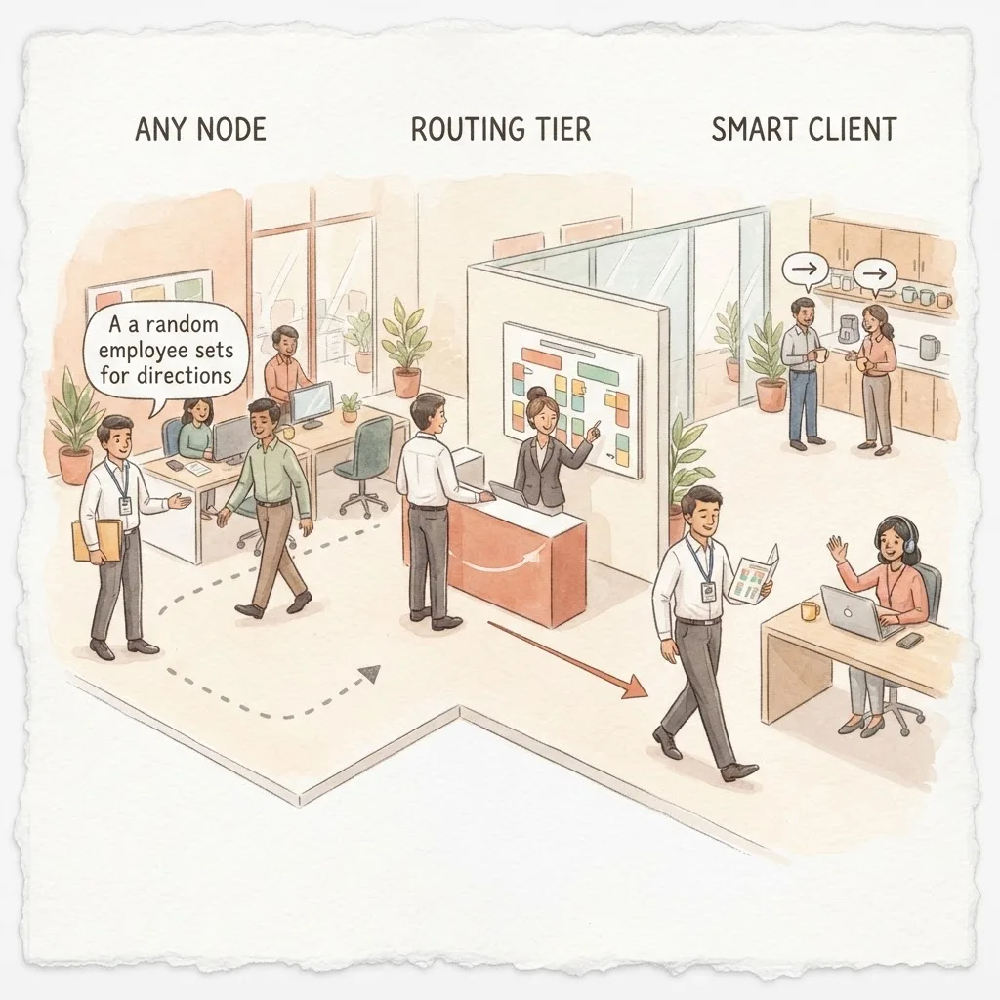
Finding a person in a big office: (1) ask any employee, who walks you to the right desk; (2) go to the reception desk, which keeps the seating chart (routing tier); (3) carry your own copy of the seating chart (smart client). When people change desks, someone must update the chart: the HR system is ZooKeeper (one authoritative chart, and reception gets an alert on every change). Cassandra's gossip is like employees telling each other "Priya moved to the third floor" over chai until everyone knows. The building's street address (DNS) almost never changes, so you can just look that up. Where it breaks: in an office, asking the wrong person costs a minute; in a database, a stale map can send a write to a node that no longer owns the data.
A client asks for the key "Danube".
The IP addresses of the nodes rarely change, so DNS can find them; the partition→node column changes often, so it lives in ZooKeeper.
The partition → node table is small but critical: everyone who routes must have the same version, or some requests hit the wrong node. Getting many machines to agree on one changing value is the consensus problem. Rather than each database re-implementing consensus, many delegate it to ZooKeeper, which is built for exactly this (small, strongly consistent metadata with change notifications). Gossip avoids the extra service but agreement is eventual and the logic lives in every node.
Since the book was written, Kafka has replaced ZooKeeper with its own built-in Raft-based (Raft is a consensus algorithm, Ch.9) metadata quorum (KRaft), and MongoDB's config servers run as a replica set. The pattern (one authoritative, consensus-backed map plus subscribers) is unchanged.
So far we focused on very simple queries that read or write a single key (plus scatter/gather for document-partitioned secondary indexes). That's about the level of access supported by most NoSQL distributed datastores.
Massively parallel processing (MPP) relational databases, often used for analytics, support much more sophisticated queries. A typical data warehouse query has several joins, filtering, grouping and aggregation. The MPP query optimizer breaks such a query into a number of execution stages and partitions, many of which can run in parallel on different nodes. Queries that scan large parts of the dataset benefit especially from parallel execution.
Fast parallel execution of data warehouse queries is a specialized topic, and given how important analytics is to business, it gets a lot of commercial interest. Some techniques come in Chapter 10. For more detail on parallel databases, see references [1, 30].
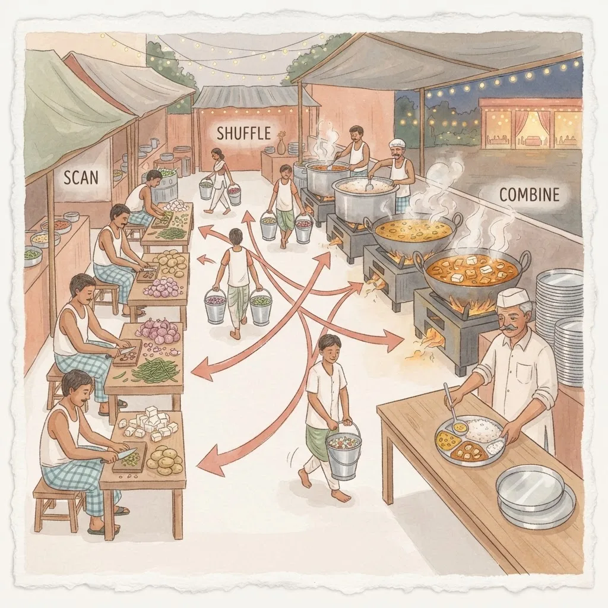
A wedding caterer must make 2,000 plates. One cook would take days. Instead: four cooks each chop and cook their share of vegetables at the same time (scan + filter on each node), then dishes are passed between stations so each station gets all of one dish (shuffle), each station finishes its dish (aggregate), and the head cook plates the final meal (combine). Where it breaks: passing dishes around a kitchen is quick; shuffling data between machines is often the most expensive step.
Single-key queries scale by sending each query to one partition. A big analytic query does the opposite: it uses all partitions for one query. The optimizer turns the SQL into a graph of operators, runs each operator on every partition at once, and inserts data-exchange steps where rows must be regrouped (e.g. by join key or group key). That is why MPP is "significantly harder" (plate 1): the stages must coordinate and move data between nodes.
Step through it below. Each node does the same work on its own rows at the same time; only the "exchange" step moves data between nodes. The final answer is the same as one machine would give, just faster when there are billions of rows.
We explored ways of partitioning a large dataset into smaller subsets. This is necessary when there's so much data that storing and processing it on a single machine is no longer feasible.
The main goal is to spread data and query load evenly across machines, avoiding hot spots (nodes with disproportionately high load). That requires choosing a partitioning scheme suited to your data, and rebalancing partitions from time to time as nodes are added or removed.
Two main approaches to partitioning:
Partitioning and secondary indexes. A secondary index also needs to be partitioned, in one of two ways:
Routing. Techniques for routing queries to the right partition range from simple partition-aware load balancing to sophisticated parallel query execution engines.
What's next. By design, every partition works mostly independently; that's what lets a partitioned database scale to many machines. But operations that write to several partitions are hard to reason about: what if the write to one partition succeeds and another fails? The next chapter covers transactions, which make multi-write operations easier to reason about (ch07).
| Term | Plain meaning | Plate |
|---|---|---|
| Partition (shard, region, tablet, vnode, vBucket) | A subset of the data; each record is in exactly one; effectively a small database | 01 |
| Shared-nothing cluster | Machines that share no disk or memory, only a network | 01 |
| Network partition (netsplit) | A network fault; unrelated to data partitioning | 01 |
| Skew | Unfair partitioning: some partitions get more data or queries | 03 |
| Hot spot | A partition (node) with disproportionately high load | 03, 06 |
| Key range partitioning | Each partition owns a continuous, sorted range of keys | 04 |
| Range scan | Reading all keys between two bounds | 04 |
| Concatenated index | Index on several fields joined in order, e.g. (sensor, time) | 04, 05 |
| Hash partitioning | Each partition owns a range of hash values of keys | 05 |
| Consistent hashing | Karger et al.'s CDN technique with random boundaries; book says call it "hash partitioning" instead | 05, 14 |
| Compound primary key | Key of several columns; first part hashed for partition, rest sorted within it (Cassandra) | 05 |
| Secondary index | Index for finding records by a non-key value; not unique | 07 |
| Document-partitioned (local) index | Each partition indexes only its own documents | 08 |
| Scatter/gather | Send a query to all partitions and combine results | 08 |
| Tail latency amplification | A request needing many sub-requests is as slow as the slowest one | 08 |
| Term-partitioned (global) index | One index over all data, partitioned by the indexed term | 09 |
| Term | An indexed value like color:red; from full-text search, where terms are words | 09 |
| Rebalancing | Moving data/load between nodes when the cluster changes | 10 |
| Hash mod N | Node = hash % N; moves most keys when N changes; avoid | 11 |
| Fixed number of partitions | Many more partitions than nodes; move whole partitions | 12 |
| Dynamic partitioning | Split partitions above a size, merge below a threshold | 13 |
| Pre-splitting | Creating initial partitions on an empty database | 13 |
| Cascading failure | One overload triggers reactions that overload others | 15 |
| Service discovery | Finding which network address serves something | 16 |
| Routing tier | Partition-aware load balancer in front of the nodes | 16 |
| Coordination service (ZooKeeper) | Keeps authoritative cluster metadata and notifies subscribers | 16 |
| Gossip protocol | Nodes spread cluster-state changes to each other | 16 |
| MPP (massively parallel processing) | Analytic databases that split one query into parallel stages | 17 |
| System | What the chapter says it does |
|---|---|
| Teradata, Tandem NonStop SQL | Pioneered partitioned databases in the 1980s |
| BigTable / HBase | Key-range partitioning (tablets / regions); HBase splits dynamically (default 10 GB), moves files via HDFS, supports pre-splitting, uses ZooKeeper for assignment; HBase avoided secondary indexes |
| RethinkDB | Key-range partitioning, dynamic partitions |
| MongoDB | Shards; key-range before 2.4; since 2.4 key-range or hash, split dynamically either way; hash mode sends range queries to all shards; document-partitioned secondary indexes; config servers + mongos routing tier; pre-splitting |
| Cassandra | vnodes; MD5 hashing; compound primary key (first part hashed, rest sorted); document-partitioned secondary indexes; one range per node before 1.2, fixed partitions since 1.2; gossip, any node forwards |
| Riak | vnodes; no primary-key range queries; added secondary indexes (document-partitioned); term-partitioned search feature; fixed partitions; suggested assignment needs admin commit; gossip |
| Couchbase | vBuckets; no primary-key range queries; fixed partitions; suggested assignment needs admin commit; no automatic rebalancing; moxi routing tier |
| Voldemort | FNV hash; no primary-key range queries; avoided secondary indexes; fixed partitions; suggested assignment needs admin commit |
| Elasticsearch, SolrCloud | Shards; secondary indexes are their reason to exist; document-partitioned indexes; Elasticsearch uses fixed partitions; SolrCloud uses ZooKeeper |
| VoltDB | Document-partitioned secondary indexes |
| Amazon DynamoDB | Global secondary indexes updated asynchronously (fraction of a second normally, longer under faults) |
| Oracle data warehouse | Choice of local or global indexing |
| ZooKeeper | Coordination service holding the authoritative partition → node map; notifies routing tiers |
| LinkedIn Espresso + Helix | Helix (on ZooKeeper) manages the cluster; routing tier as in Fig 6-8 |
| Kafka | Uses ZooKeeper to track partition assignment (book era) |
| MPP data warehouses | Split complex analytic queries into parallel stages across nodes |
Each replica holds a full copy, so storage per machine doesn't shrink and every write still goes to every copy. Partitioning splits the data so each machine stores and serves only part of it.
All names for a partition: shard (MongoDB, Elasticsearch, SolrCloud), region (HBase), tablet (BigTable), vnode (Cassandra, Riak), vBucket (Couchbase).
Data would be even, but to read a key you wouldn't know its node, so every read would have to query all nodes in parallel.
All current writes go to the partition holding "now" (a write hot spot) while others sit idle. Prefix the key with something well-spread, like the sensor name; the cost is one range query per sensor when reading many sensors over a time range.
Efficient range queries on the key (adjacent keys are scattered). Cassandra hashes only the first column of a compound primary key and sorts by the remaining columns within the partition, so with a fixed first column, e.g. user_id, you can range-scan by update_timestamp.
No: the same key always hashes to the same partition. The app can append a random two-digit number to the hot key, spreading writes over 100 keys; reads must then fetch all 100 and combine, and you must track which keys are split.
All 50 (scatter/gather). The query waits for the slowest reply, so tail latency amplification makes slow responses much more likely as partitions grow.
The write may touch several index partitions; rather than a distributed transaction, global indexes are often updated asynchronously, so the index can lag (DynamoDB: usually a fraction of a second, longer under faults).
6, 3, 0. Changing N moves most keys, making rebalancing excessively expensive.
Only the partition → node assignment changes. The number of partitions and the key → partition assignment never change. While data is copied, the old assignment serves reads and writes.
It starts with one partition, so one node takes all writes until the first split. HBase and MongoDB allow pre-splitting, which for key ranges requires knowing the key distribution in advance.
Other nodes may declare it dead and move its load onto themselves, adding data-transfer and request load, possibly overloading them too: a cascading failure. A human approving rebalances prevents such surprises.
(1) Any node, which forwards: every node. (2) Routing tier: the tier. (3) Partition-aware client: the client. ZooKeeper (or gossip in Cassandra/Riak) keeps the map authoritative and notifies those who route.